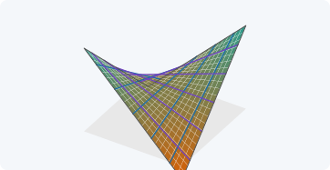

12 El paraboloide hiperbólico
Superficie reglada de bordes rectos y de bordes curvos

Por qué una superficie con forma de silla de montar se puede construir con tablones rectos, y qué la hace difícil de calcular
Objetivos y prerrequisitos
Objetivos. Al terminar el tema sabrás:
- describir el paraboloide hiperbólico como superficie explícita y como superficie reglada;
- obtener sus tensores geométricos (\(a_{\alpha\beta}\), \(\hat{\mathbf{a}}_3\), \(b_{\alpha\beta}\), \(\bar\Gamma^\gamma_{\alpha\beta}\), \(K\)) en forma cerrada y contrastarlos numéricamente;
- explicar por qué las curvas coordenadas no son líneas de curvatura en un punto cualquiera;
- distinguir las tipologías de bordes curvos y de bordes rectos y relacionarlas por un giro de \(45^\circ\) en planta;
- justificar cuándo una lámina de este tipo puede considerarse «muy plana» (shallow).
Prerrequisitos. Curvaturas de una superficie y Formas fundamentales.
Secciones del tema
- Sección 12.1 · Motivación · Sección 12.2 · Descripción geométrica
- Sección 12.3 · Tensores del hypar de bordes curvos · Sección 12.4 · Curvaturas del hypar reglado
- Sección 12.5 · Láminas muy planas · Sección 12.6 · Laboratorio · Sección 12.7 · Práctica guiada
12.1 Motivación
El paraboloide hiperbólico («hypar») es una superficie de doble curvatura negativa (\(K<0\)) que puede construirse con elementos rectos. Esa combinación de rigidez geométrica y facilidad de encofrado lo ha convertido en una forma frecuente de cubiertas de hormigón de espesor muy pequeño. Para el análisis estructural tiene una dificultad: sus curvas coordenadas naturales no son ortogonales (Sección 12.3.1), de modo que no sirven las teorías de láminas que suponen coordenadas ortogonales.
ImportanteIdea clave
Lo que se ha aprendido en los temas de superficies, formas fundamentales y curvaturas se aplica aquí sin hipótesis adicionales: \(a_{\alpha\beta}\) es no diagonal, y por eso el formalismo tensorial completo (bases covariante y recíproca distintas, símbolos de Christoffel no nulos) es necesario.
12.2 Descripción geométrica
12.2.1 Forma explícita (bordes curvos)
Definición 12.1 (Paraboloide hiperbólico en ejes principales) Con ejes cartesianos \((x,y,z)\), la superficie media es \[ z=-\frac12\left(\frac{x^2}{R_x}+\frac{y^2}{R_y}\right),\qquad R_xR_y<0, \tag{12.1}\] y su proyección en planta es un rectángulo \([-a/2,a/2]\times[-b/2,b/2]\). Los bordes son parábolas en los planos \(x=\pm a/2\) e \(y=\pm b/2\).
Se parametriza por \((\theta^1,\theta^2)=(x,y)\). Las secciones por planos \(y=\text{cte}\) son parábolas que se curvan hacia abajo si \(R_x>0\), y las de \(x=\text{cte}\) hacia arriba si \(R_y<0\).
12.2.2 Forma reglada (bordes rectos)
Definición 12.2 (Paraboloide hiperbólico reglado) \[ z=c\,x\,y,\qquad {}_0\mathbf{r}(\theta^1,\theta^2)=\bigl(\theta^1,\ \theta^2,\ c\,\theta^1\theta^2\bigr). \tag{12.2}\]
Las curvas \(\theta^1=\text{cte}\) y \(\theta^2=\text{cte}\) son rectas (Figura 12.2): fijado \(\theta^1=u\), \(\theta^2\mapsto(u,\theta^2,c\,u\,\theta^2)\) es lineal. Por tanto el paraboloide hiperbólico contiene dos familias de generatrices rectas, y por eso se llama superficie doblemente reglada.

Proposición 12.1 (Las dos formas son la misma superficie) Con \(R_x=R\), \(R_y=-R\) y el giro de \(45^\circ\) en planta \(x=(X-Y)/\sqrt2\), \(y=(X+Y)/\sqrt2\), la ecuación ecuación 12.1 equivale a ecuación 12.2 con \(c=-1/R\).
NotaDemostración de Proposición 12.1
Con \(R_x=R,R_y=-R\): \(z=-\tfrac{1}{2R}(X^2-Y^2)\). Con \(X=(x+y)/\sqrt2\), \(Y=(y-x)/\sqrt2\) (el giro inverso), \(X^2-Y^2=2xy\), luego \(z=-xy/R=c\,xy\) con \(c=-1/R\). \(\blacksquare\)
Así, la misma superficie admite dos tipologías de lámina según cómo se recorte en planta (Figura 12.3):
- bordes curvos: el rectángulo en planta tiene lados paralelos a los ejes principales (las secciones con los planos verticales de los bordes son parábolas);
- bordes rectos: el rectángulo tiene lados paralelos a las generatrices, es decir, a \(45^\circ\) de los ejes principales (los bordes son segmentos rectos).

12.3 Tensores geométricos del paraboloide de bordes curvos
Con \({}_0\mathbf{r}=(\theta^1,\theta^2,-\tfrac12(\theta^{1\,2}/R_x+\theta^{2\,2}/R_y))\) y \(w^2\equiv a\) (ecuación 8.9), se obtienen, como se ha calculado en los temas de superficies parametrizadas y de formas fundamentales:
TipResultados analíticos y verificación
analítico verificado numéricamente
| Objeto | Expresión |
|---|---|
| \(\mathbf{a}_{1,1},\ \mathbf{a}_{2,2},\ \mathbf{a}_{1,2}\) | \((0,0,-1/R_x)\), \((0,0,-1/R_y)\), \(\mathbf{0}\) |
| \(a^{11},\ a^{22},\ a^{12}\) | \(\dfrac{R_x^2(R_y^2+\theta_2^2)}{D},\ \dfrac{R_y^2(R_x^2+\theta_1^2)}{D},\ -\dfrac{R_xR_y\theta_1\theta_2}{D}\) con \(D=R_y^2\theta_1^2+R_x^2(R_y^2+\theta_2^2)=R_x^2R_y^2\,a\) |
| \(b_{11},\ b_{22},\ b_{12}\) | \(-\dfrac{1}{R_x\sqrt{a}},\ -\dfrac{1}{R_y\sqrt{a}},\ 0\) |
| \(\bar\Gamma^1_{11},\ \bar\Gamma^1_{22}\) | \(\dfrac{R_y^2\theta_1}{D},\ \dfrac{R_xR_y\theta_1}{D}\) |
| \(\bar\Gamma^2_{11},\ \bar\Gamma^2_{22}\) | \(\dfrac{R_xR_y\theta_2}{D},\ \dfrac{R_x^2\theta_2}{D}\) |
| \(\bar\Gamma^1_{12},\ \bar\Gamma^2_{12}\) | \(0,\ 0\) |
| \(K=\det(b^\alpha_\beta)\) | \(\dfrac{1}{R_xR_y\,a^2}<0\) |
La expresión de \(\bar\Gamma^2_{22}\) se ha deducido por simetría con la de \(\bar\Gamma^1_{11}\); se verifica junto con las demás en el test «Superficies: paraboloide hiperbólico de bordes curvos». El resto coincide con las que se obtienen a mano con ecuación 9.3.
12.3.1 Las curvas coordenadas no son líneas de curvatura
AdvertenciaCurvas coordenadas y direcciones principales
Como \(a_{12}=\theta^1\theta^2/(R_xR_y)\neq0\) salvo sobre los ejes, las curvas coordenadas no son ortogonales. Además, \(b_{12}=0\) pero \(a_{12}\neq0\), así que las direcciones coordenadas no son principales (para serlo, \(b_{12}-\kappa a_{12}=0\) con el mismo \(\kappa\) en ambas). Solo en el origen y sobre los ejes coinciden las direcciones coordenadas con las principales. Esta es la dificultad que impide usar teorías de láminas con coordenadas ortogonales.
12.4 Curvaturas del paraboloide reglado
Para \(z=c\,x\,y\):
TipResultados analíticos
analítico verificado numéricamente \[ a_{11}=1+c^2(\theta^2)^2,\quad a_{22}=1+c^2(\theta^1)^2,\quad a_{12}=c^2\theta^1\theta^2,\quad a=1+c^2\bigl[(\theta^1)^2+(\theta^2)^2\bigr], \] \[ b_{11}=b_{22}=0,\qquad b_{12}=\frac{c}{\sqrt{a}},\qquad K=-\frac{c^2}{a^2} . \tag{12.3}\]
Como \(b_{11}=b_{22}=0\), la curvatura normal en las direcciones coordenadas es nula: las rectas generatrices son líneas asintóticas (\(\kappa=0\)), como era de esperar. En el origen, \(a_{\alpha\beta}=\delta_{\alpha\beta}\), \(b_{12}=c\) y las curvaturas principales son \(\pm c\) en las direcciones a \(\pm45^\circ\).
Ejemplo 12.1 (Ejemplo resuelto: curvaturas del hypar en un punto) Sea \(R_x=3\), \(R_y=-3\) y el punto \((\theta^1,\theta^2)=(1,-1)\). Entonces \(a=1+\tfrac19+\tfrac19=\tfrac{11}9\approx1{,}222\), \(\sqrt a\approx1{,}106\) y, por la tabla, \[ K=\frac1{R_xR_y\,a^2}=\frac1{-9\cdot1{,}494}=-0{,}0744 . \] Es negativa, como en todo el paraboloide. En el origen, en cambio, \(a=1\) y \(K=1/(R_xR_y)=-\tfrac19=-0{,}111\): la superficie se curva más (en valor absoluto) en el centro que hacia los bordes.
Pon a prueba lo anterior. Los ejercicios se corrigen en tu navegador y no envían nada a ningún sitio.
Con \(R_x=3\), \(R_y=-3\), ¿cuánto vale \(K\) en el punto \((\theta^1,\theta^2)=(1,-1)\)?
\(K=1/(R_xR_y\,a^2)\) con \(a=11/9\): \(-1/(9\cdot1{,}4938)=-0{,}0744\).
En \(z=c\,x\,y\), las curvas coordenadas \(\theta^1=\text{cte}\) y \(\theta^2=\text{cte}\) son…
- líneas de curvatura (direcciones principales)
- circunferencias
- rectas, con curvatura normal nula (direcciones asintóticas)
- parábolas
Son rectas (las generatrices) y, como \(b_{11}=b_{22}=0\), su curvatura normal es nula: direcciones asintóticas. Las direcciones principales están a \(45^\circ\) en el origen.
12.5 Láminas muy planas
Se dice que una lámina de este tipo es muy plana (shallow) si la pendiente de la superficie es pequeña, \(|\partial z/\partial x|,|\partial z/\partial y|\ll1\). En un paraboloide con planta \(a\times b\) y radios \(R_x,R_y\), las pendientes máximas son \(a/(2|R_x|)\) y \(b/(2|R_y|)\). Entonces \(a_{\alpha\beta}\approx\delta_{\alpha\beta}\), \(\hat{\mathbf{a}}_3\approx\mathbf{e}_z\) y \(b_{\alpha\beta}\approx\operatorname{diag}(-1/R_x,-1/R_y)\) son aproximadamente constantes. La Tabla 12.1 cuantifica la desviación de la métrica.
using Geometria, LinearAlgebra, Printf
a_lado = 1.0
println("| \$R/a\$ | pendiente máxima \$a/2R\$ | desviación máx. de \$a_{\\alpha\\beta}\$ | \$(a/2R)^2\$ |")
println("|---:|---:|---:|---:|")
for ratio in (2.0, 5.0, 10.0, 20.0, 50.0)
R = ratio * a_lado
r = paraboloide_curvo(R, -R)
A = base_superficie(r, [a_lado / 2, a_lado / 2])
dev = maximum(abs.(metrica(A) - I(2)))
pend = a_lado / (2R)
@printf("| %g | %.4f | %.6f | %.6f |\n", ratio, pend, dev, pend^2)
end| \(R/a\) | pendiente máxima \(a/2R\) | desviación máx. de \(a_{\alpha\beta}\) | \((a/2R)^2\) |
|---|---|---|---|
| 2 | 0.2500 | 0.062500 | 0.062500 |
| 5 | 0.1000 | 0.010000 | 0.010000 |
| 10 | 0.0500 | 0.002500 | 0.002500 |
| 20 | 0.0250 | 0.000625 | 0.000625 |
| 50 | 0.0100 | 0.000100 | 0.000100 |
La desviación es del orden de la pendiente al cuadrado, \((a/2R)^2\). Para \(R/a\ge10\) la métrica se desvía menos de un \(0{,}3\,\%\) de la euclídea.
12.6 Laboratorio interactivo
Laboratorio · Tensores del paraboloide hiperbólico
calculado en el navegador Verificado frente a Julia (web/tests/laboratorios.test.mjs).
Elige \(R_x\), \(R_y\) (de signo contrario) y un punto \((x,y)\) del plano. Qué observar:
- En el origen, \(a_{\alpha\beta}=\delta_{\alpha\beta}\) y \(b_{\alpha\beta}\) es diagonal: las curvaturas principales son \(-1/R_x\) y \(-1/R_y\).
- Al alejarte del origen aparece \(a_{12}\neq0\) (coordenadas no ortogonales) y \(|K|\) disminuye.
- Si \(R_x=-R_y\), la curvatura media \(H\) es cero en el origen (superficie «mínima» allí).
- Con \(R_x\) y \(R_y\) grandes (lámina muy plana), \(a_{\alpha\beta}\approx\delta_{\alpha\beta}\) en todo el rectángulo.
12.7 Ejemplo computacional en Julia
TipEjemplo computacional
calculado Se comprueban las fórmulas de la tabla de Sección 12.3 y de ecuación 12.3, y la Proposición 12.1, en puntos concretos.
using Geometria, LinearAlgebra
Rx, Ry = 3.0, -2.0
θ = [0.7, -0.4]
r = paraboloide_curvo(Rx, Ry)
A = base_superficie(r, θ); a = metrica(A); b = segunda_forma(r, θ)
Γ = cristoffel_superficie(r, θ)
ainv = inv(a)
D = Ry^2 * θ[1]^2 + Rx^2 * (Ry^2 + θ[2]^2)
w = sqrt(det(a))
(b_ok = b ≈ [-1/(Rx*w) 0; 0 -1/(Ry*w)],
ainv12_ok = ainv[1, 2] ≈ -Rx*Ry*θ[1]*θ[2] / D,
Γ1_11_ok = Γ[1, 1, 1] ≈ Ry^2 * θ[1] / D,
Γ1_22_ok = Γ[1, 2, 2] ≈ Rx*Ry*θ[1] / D,
Γ2_11_ok = Γ[2, 1, 1] ≈ Rx*Ry*θ[2] / D,
Γ2_22_ok = Γ[2, 2, 2] ≈ Rx^2 * θ[2] / D,
K_ok = curvaturas_principales(a, b).K ≈ 1 / (Rx*Ry*det(a)^2))(b_ok = true, ainv12_ok = true, Γ1_11_ok = true, Γ1_22_ok = true, Γ2_11_ok = true, Γ2_22_ok = true, K_ok = true)# Direcciones principales en el punto: ¿coinciden con las coordenadas?
pc = curvaturas_principales(a, b)
(κ = pc.κ, λ1 = pc.λ[:, 1], λ2 = pc.λ[:, 2], a12 = a[1, 2])(κ = [-0.30241311065905063, 0.4601089629566834], λ1 = [-0.974457030198639, 0.017353958794629455], λ2 = [0.026216470919493237, -0.9814023725339406], a12 = 0.04666666666738451)# Paraboloide reglado z = c·x·y: b₁₁ = b₂₂ = 0, K = −c²/a²
c0 = 0.8; rec = paraboloide_recto(c0); t = [0.5, -0.7]
Ar = base_superficie(rec, t); ar = metrica(Ar); br = segunda_forma(rec, t)
ap = 1 + c0^2 * (t[1]^2 + t[2]^2)
(b = round.(br; digits = 6), b12_ok = br[1, 2] ≈ c0 / sqrt(ap),
K = curvaturas_principales(ar, br).K, K_ok = curvaturas_principales(ar, br).K ≈ -c0^2 / ap^2)(b = [-0.0 0.659022; 0.659022 -0.0], b12_ok = true, K = -0.2947275594184845, K_ok = true)# Giro de 45°: misma altura z en ambas descripciones (R_x = −R_y = R, c = −1/R)
R = 2.5
cur = paraboloide_curvo(R, -R); rect = paraboloide_recto(-1 / R)
X = [0.4, 0.9]
xy = [(X[1] - X[2]) / sqrt(2), (X[1] + X[2]) / sqrt(2)]
(cur(X)[3], rect(xy)[3])(0.13, 0.13)12.8 Ejercicios
Generatrices. Demuestra que la recta \(\theta^1=u\) de ecuación 12.2 está contenida en la superficie y que por cada punto pasan exactamente dos generatrices.
NotaSolución\((u,\theta^2,c\,u\,\theta^2)\) es lineal en \(\theta^2\) y cumple \(z=cxy\). Por el punto \((x_0,y_0,z_0)\) pasan la recta \(x=x_0\) (de la primera familia) y la recta \(y=y_0\) (de la segunda): exactamente dos.
Tensores. Comprueba ecuación 12.3 con
Geometriapara \(c=1\) en tres puntos distintos.NotaSoluciónr = paraboloide_recto(1.0),a = metrica_superficie(r, t),b = segunda_forma(r, t):det(a) ≈ 1 + t[1]^2 + t[2]^2yb ≈ [0 1/√a; 1/√a 0].Direcciones principales. Calcula las direcciones principales de \(z=c\,x\,y\) en un punto cualquiera y comprueba que solo en el origen forman \(45^\circ\) con los ejes.
NotaSoluciónCon
curvaturas_principales(a, b): en el origen \(\lambda=(\pm1,1)/\sqrt2\); en otros puntos \(a_{12}=c^2xy\neq0\) y las direcciones, ortogonales respecto de \(a_{\alpha\beta}\), giran.Pendiente máxima. Para \(R_x=-R_y=R\), ¿para qué valores de \(a/R\) la pendiente máxima en el borde de una planta cuadrada de lado \(a\) supera \(0{,}25\)?
NotaSoluciónLa pendiente en el borde es \(a/(2R)\); supera \(0{,}25\) si \(a/R>0{,}5\).
Curvas de nivel. Dibuja, para \(c=0{,}5\), las curvas de nivel \(z=\text{cte}\) y las generatrices proyectadas en planta; ¿qué forma tienen?
NotaSoluciónLas curvas de nivel son hipérbolas \(xy=z/c\); las generatrices proyectadas son las rectas \(x=\text{cte}\) y \(y=\text{cte}\) paralelas a los ejes.
La doy por superada si…
- Describo el hypar por \(z=-\tfrac12(x^2/R_x+y^2/R_y)\) y por \(z=cxy\) y sé relacionarlos con un giro de \(45^\circ\).
- Reconozco las dos familias de generatrices rectas y su curvatura normal nula.
- Conozco \(a_{\alpha\beta}\), \(b_{\alpha\beta}\), \(K\) y los símbolos de Christoffel del hypar y sé verificarlos.
- Explico por qué las curvas coordenadas no son líneas de curvatura salvo en puntos especiales.
- Sé cuándo una lámina puede tratarse como muy plana.
NotaFuentes, correcciones y qué queda pendiente
Fuentes. Texto autónomo, resultados estándar de geometría de superficies (Carmo 1994; Novozhilov 1959; Canals 1976; Margarit y Buxadé, s. f.; Narita y Leissa 1984). La tabla de tensores y símbolos de Christoffel del hypar de bordes curvos se contrasta con Geometria; la expresión de \(\bar\Gamma^2_{22}\) se dedujo por simetría y está verificada.
Qué queda pendiente. Figuras con revisión visual pendiente; nota histórica de fuentes secundarias sin datos cuantitativos de costes; referencias no leídas línea a línea (las de Canals y Margarit son las de la bibliografía del tema; la de Margarit carece de año).
Narita, Y., y A. W. Leissa. 1984. «Vibrations of Corner Point Supported Shallow Shells of Rectangular Planform». Earthquake Engineering and Structural Dynamics 12: 651-61.
Margarit, J., y C. Buxadé. s. f. Cálculo de Estructuras en Paraboloide Hiperbólico. Editorial Blume.
Canals, I. 1976. Cascarones Parabólicos-Hiperbólicos. Editorial Limusa, s.a.
Novozhilov, V. V. 1959. The Theory of Thin Shells. P. Noordhoff ltd.
Carmo, M. do. 1994. Geometría diferencial de curvas y superficies. Alianza Universidad.
Referencias
Son las mismas que aparecen en el margen, junto al texto.
Canals, I. 1976. Cascarones Parabólicos-Hiperbólicos. Editorial Limusa, s.a.
Carmo, M. do. 1994. Geometría diferencial de curvas y superficies. Alianza Universidad.
Margarit, J., y C. Buxadé. s. f. Cálculo de Estructuras en Paraboloide Hiperbólico. Editorial Blume.
Narita, Y., y A. W. Leissa. 1984. «Vibrations of Corner Point Supported Shallow Shells of Rectangular Planform». Earthquake Engineering and Structural Dynamics 12: 651-61.
Novozhilov, V. V. 1959. The Theory of Thin Shells. P. Noordhoff ltd.